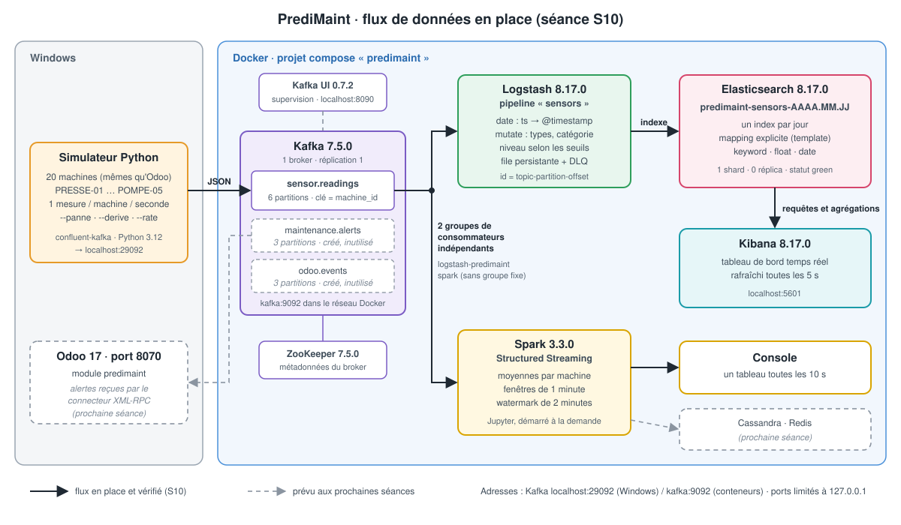

Étude et évaluation d'une architecture Big Data pour la maintenance prédictive des équipements industriels
| Composant (cahier des charges) | État | Détail |
|---|---|---|
| Environnement Docker | Fait | Pile du cours, versions identiques, démarrage en une commande. |
| Ingestion Kafka | Fait | 3 topics créés ; flux sensor.readings actif. |
| Simulateur IoT (§ 8.2) | Fait | 20 machines, pannes et dérive injectables, débit réglable. |
| Jeu de données public (§ 8.3) | Fait | Téléchargé, contrôlé, préparé ; pas encore chargé dans une base. |
Pipeline Logstash sensors | Fait | Kafka → Elasticsearch, file persistante, DLQ, idempotence. |
| Elasticsearch (mapping explicite) | Fait | Index template, un index par jour, statut green. |
| Spark Structured Streaming | Partiel | Moyennes par machine sur 1 minute ; détection d'anomalies à faire. |
| Tableau de bord Kibana | Partiel | Données prêtes et procédure rédigée ; tableau de bord à construire. |
| Cassandra, Redis (§ 7.4, 7.5) | À faire | Séance suivante. |
| Alertes vers Odoo (§ 9.1) | À faire | Topic maintenance.alerts déjà créé ; connecteur à écrire. |
| Spark batch (MTBF, score de santé) | À faire | Utilisera l'historique Kaggle préparé. |
| Kafka à 3 brokers, tests de performance et de panne | À faire | Sections 10.2 et 10.3. |

Le flux se lit de gauche à droite. Sous Windows, le simulateur envoie chaque seconde une mesure JSON par
machine dans le topic sensor.readings. Deux consommateurs indépendants lisent ce topic, chacun
dans son propre groupe : Logstash, qui indexe dans Elasticsearch pour Kibana, et Spark, qui calcule des
agrégats en continu. Kafka sert de tampon : si un traitement s'arrête, les messages l'attendent.
Le docker-compose.yaml du cours (édition du Lab 2, qui contient Logstash) a été copié dans le
projet ; le fichier d'origine n'est pas modifié. Les versions sont conservées à l'identique :
| Composant | Version | Composant | Version |
|---|---|---|---|
| Kafka, ZooKeeper (Confluent) | 7.5.0 | Kafka UI | 0.7.2 |
| Elasticsearch, Logstash, Kibana | 8.17.0 | Spark (Jupyter PySpark) | 3.3.0 |
| Connecteur Spark-Kafka | org.apache.spark:spark-sql-kafka-0-10_2.12:3.3.0 | ||
Adaptations : projet Docker renommé predimaint (volumes séparés de ceux des labs), profils
pipeline et spark (Spark démarré seulement à la demande, pour économiser la mémoire),
création automatique de topics désactivée, et ports de Kafka UI et Jupyter déplacés (8090, 8890) car une
machine virtuelle occupait déjà 8080, 8081 et 8888.
| Topic | Partitions | Réplication | Rôle |
|---|---|---|---|
sensor.readings | 6 | 1 | Mesures des capteurs ; clé = identifiant machine (ordre garanti par machine) |
maintenance.alerts | 3 | 1 | Alertes détectées par Spark (prochaine étape) |
odoo.events | 3 | 1 | Demandes créées et clôturées dans Odoo (prochaine étape) |
La réplication est de 1 car l'environnement compte un seul broker ; elle passera à 3 avec le cluster de 3 brokers.
Simulateur. Il reproduit les 20 machines du projet, avec les mêmes identifiants que dans Odoo
(PRESSE-01 à POMPE-05). Chaque grandeur (température, vibration, pression, puissance,
bruit) vaut : valeur nominale + cycle de production + bruit aléatoire. On peut ajouter une dérive lente
(usure) ou injecter en direct une panne (surchauffe, vibration ou surpression), avec une montée progressive
sur 15 secondes. Le débit est réglable pour les futurs tests de performance.
Jeu de données public. Le jeu Microsoft Azure Predictive Maintenance (Kaggle, publié par Microsoft en 2016) apporte un historique réel de pannes datées.
Le jeu comporte 4 modèles de machines, comme nos 4 catégories : pour chaque modèle, les 5 machines ayant le plus de pannes ont été retenues (historique le plus riche pour le MTBF), puis renommées avec les identifiants du projet. Les grandeurs du jeu (tension, rotation, pression, vibration) sont conservées telles quelles.
sensor.readings dans le groupe logstash-predimaint, décodage JSON.@timestamp ; conversion des types ; catégorie déduite de l'identifiant ; niveau normal, surveillance ou critique calculé à partir des seuils définis dans Odoo.predimaint-sensors-AAAA.MM.JJ, avec un identifiant de document topic-partition-offset qui évite les doublons en cas de relecture.Un job lit le même topic et calcule, toutes les 10 secondes, la moyenne de chaque grandeur et la température maximale par machine, sur des fenêtres d'une minute basées sur l'heure de la mesure. Un watermark de 2 minutes accepte les mesures en retard tout en libérant la mémoire des fenêtres closes.
| Vérification | Résultat mesuré |
|---|---|
| Services | Elasticsearch, Kibana, Logstash, Kafka UI, Kafka et ZooKeeper répondent ; cluster Elasticsearch green. |
| Débit d'indexation | Compteur Elasticsearch : 10 140 → 10 260 → 10 360 documents en 12 s, soit environ 20 documents par seconde, le débit du simulateur. |
| Retard de Logstash | 6 à 12 messages par partition, soit moins d'une seconde. |
| Absence de perte | Logstash démarré 7 minutes après le simulateur : les 9 880 messages en attente dans Kafka ont tous été indexés. |
| Panne injectée (surchauffe) | Température maximale par tranche de 5 s : 80 → 96 → 116 → 130 → 131 °C ; niveau surveillance puis critique ; visible dans Elasticsearch en moins de 5 s. |
| Fausses alertes | Aucune machine hors panne ne dépasse un seuil sur 15 minutes (requête Elasticsearch en 4 ms). |
| Spark Streaming | 11 micro-lots en 100 s, 20 machines par fenêtre, aucune erreur. |
| Reprise après redémarrage | Après arrêt et redémarrage de la pile : données conservées (25 380 documents), puis 300 messages envoyés = 300 documents indexés. |
| Choix | Justification |
|---|---|
| Kafka entre les capteurs et les traitements | Découplage, tampon en cas d'arrêt, plusieurs consommateurs indépendants, relecture possible. |
| Clé Kafka = identifiant machine | Toutes les mesures d'une machine vont dans la même partition : leur ordre est conservé. |
| Logstash pour l'indexation | Configuration déclarative, file persistante, DLQ, supervision par API (Lab 2). |
| Mapping explicite avant indexation | Types corrects dès le premier document (Lab 1) ; pas de devinette d'Elasticsearch. |
| Identifiant de document déterministe | Une relecture après panne réécrit le même document au lieu de créer un doublon. |
| Simulateur et jeu public | Le simulateur permet de contrôler pannes et débit ; le jeu public apporte un historique réaliste de pannes. |
| Elasticsearch hors des bases NoSQL exigées | Il sert à la recherche et à la visualisation ; les deux bases NoSQL seront Cassandra et Redis. |
| Difficulté | Solution retenue |
|---|---|
| Logstash absent du compose de base du cours | Utilisation de l'édition du Lab 2, qui contient Logstash 8.17.0. |
| Ports 8080, 8081 et 8888 refusés par Docker | Cause identifiée : redirections d'une machine virtuelle VirtualBox. Kafka UI et Jupyter déplacés sur 8090 et 8890. |
| Mémoire limitée (environ 1 Go libre) | Profils Docker : Spark démarré seulement à la demande. |
| Téléchargement du connecteur Spark trop long et cache non partagé | Cache des paquets Maven placé dans le dossier du projet (spark.jars.ivy). |
| Licence du jeu Kaggle indiquée « Unknown » | Données complètes non redistribuées ; seuls un extrait de 48 h et le script de préparation sont joints. |
| # | Travail prévu | Référence |
|---|---|---|
| 1 | Cassandra (mesures et agrégats par machine) et Redis (dernières valeurs, seuils, alertes actives). | § 7.4, 7.5 |
| 2 | Détection d'anomalies dans Spark (seuils et écart à la moyenne), publication dans maintenance.alerts, point de reprise. | § 7.2 |
| 3 | Connecteur vers Odoo : création des demandes d'intervention prédictives ; pipeline Logstash alerts. | § 9.1, 7.6 |
| 4 | Chargement de l'historique Kaggle ; Spark batch : MTBF, disponibilité, score de santé. | § 7.3, 8.3 |
| 5 | Tableau de bord Kibana temps réel. | § 7.6 |
| 6 | Kafka à 3 brokers ; tests de performance et de tolérance aux pannes. | § 10.2, 10.3 |
cd "Mini Projet Big Data" powershell -ExecutionPolicy Bypass -File .\scripts\demarrer.ps1 # pile, index template, topics powershell -ExecutionPolicy Bypass -File .\scripts\verifier.ps1 # contrôle des services cd simulator ; py -3.12 -m venv .venv ; .\.venv\Scripts\python.exe -m pip install -r requirements.txt .\.venv\Scripts\python.exe simulateur.py # flux temps réel .\.venv\Scripts\python.exe simulateur.py --panne COMP-03 --type surchauffe # 2e terminal : panne py -3.12 -I ..\data_prep\preparer_donnees.py # préparation du jeu Kaggle
Les commandes détaillées sont dans README.md ; la description des données dans docs/donnees.md.